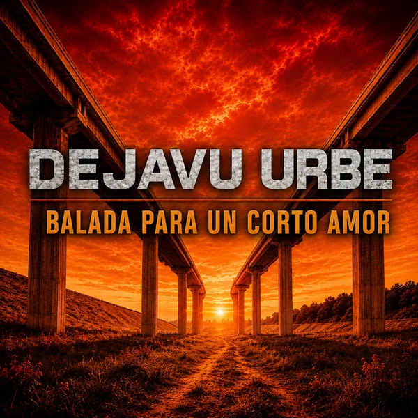

DejavuUrbe · 2026
Balada para un corto amor
Una balada rock sobre la ausencia, la espera y esa sensación de que una historia empieza a terminar antes de que uno esté preparado.

La canción
Balada para un corto amor
La canción se construye alrededor de una ausencia muy concreta: dejar de escuchar una voz, esperar un regreso y descubrir que incluso la espera empieza a perder sentido.
Los versos avanzan desde la dificultad de acostumbrarse a esa falta hasta una imagen simple y definitiva: la noche cae, el día termina y con él también se apaga la ilusión.
El estribillo concentra todo en una promesa y un pedido de regreso. Esa sencillez emocional es parte central de su identidad y la ubica en la faceta más melódica de DejavuUrbe.